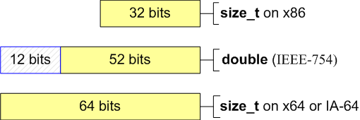

Porting C++ codes to the 64-bit platform
Table of Contents
some types


Use of functions with a variable number of arguments
const char *invalidFormat = "%u"; size_t value = SIZE_MAX; printf(invalidFormat, value);
It is not taken into account that size_t type is not equivalent to
unsigned type on the 64-bit platform. As a result, it will cause
printing of an incorrect result if value > UINT_MAX.
// PR_SIZET on Win64 = "I" // PR_SIZET on Win32 = "" // PR_SIZET on Linux64 = "l" // ... size_t u; scanf("%" PR_SIZET "u", &u); // or size_t x = ...; ssize_t y = ...; printf("%zu\n", x); // prints as unsigned decimal printf("%zx\n", x); // prints as hex printf("%zd\n", y); // prints as signed decimal
Magic numbers
4 Number of bytes in a pointer type 32 Number of bits in a pointer type 0x7fffffff The maximum value of a 32-bit signed variable. Mask for zeroing of the high bit in a 32-bit type. 0x80000000 The minimum value of a 32-bit signed variable. Mask for allocation of the high bit in a 32-bit type. 0xffffffff The maximum value of a 32-bit variable. An alternative record -1 as an error sign.
You should study the code thoroughly in search of magic numbers and
replace them with safe numbers and expressions. To do so you can use
sizeof() operator, special values from <limits.h>, <inttypes.h>
etc.
1) size_t ArraySize = N * 4; intptr_t *Array = (intptr_t *)malloc(ArraySize); 2) size_t values[ARRAY_SIZE]; memset(values, 0, ARRAY_SIZE * 4); 3) size_t n, newexp; n = n >> (32 - newexp);
Let's assume that in all cases the size of the types used is always 4
bytes. To make the code correct, we should use the sizeof() operator.
1) size_t ArraySize = N * sizeof(intptr_t); intptr_t *Array = (intptr_t *)malloc(ArraySize); 2) size_t values[ARRAY_SIZE]; memset(values, 0, ARRAY_SIZE * sizeof(size_t)); //or memset(values, 0, sizeof(values)); //preferred alternative 3) size_t n, newexp; n = n >> (CHAR_BIT * sizeof(n) - newexp);
Storing integers in double type
Some programmers use double type for storing of, and working with, integer types.
size_t a = size_t(-1); double b = a; --a; --b; size_t c = b; // x86: a == c // x64: a != c
The given example can be justified on a 32-bit system, as double type has 52 significant bits and is capable of storing a 32-bit integer value without loss. But while trying to store a 64-bit integer in double the exact value can be lost.

Bit shifting operations
Static analyzers
- Gimpel Software PC-Lint (http://www.gimpel.com). This analyzer has a large list of supported platforms and a general purpose static analyzer. It allows you to catch errors while porting programs on architectures with LP64 data model.
- Parasoft C++test (http://www.parasoft.com). It has a built-in environment, which greatly simplifies the work process and setting of the analysis rules.
- Viva64 (http://www.viva64.com). Unlike other analyzers, this one is intended to work with Windows (LLP64) data model. It is integrated into the development environment Visual Studio 2005.
References
- 20 issues of porting C++ code to the 64-bit platform: http://www.viva64.com/en/a/0004/
- Converting 32-bit Applications Into 64-bit Applications: Things to Consider: http://www.oracle.com/technetwork/server-storage/solaris/ilp32tolp64issues-137107.html
- Andrew Josey. Data Size Neutrality and 64-bit Support. http://www.unix.org/whitepapers/64bit.html.
- Harsha S. Adiga. Porting Linux applications to 64-bit systems. http://www.ibm.com/developerworks/library/l-port64/index.html.